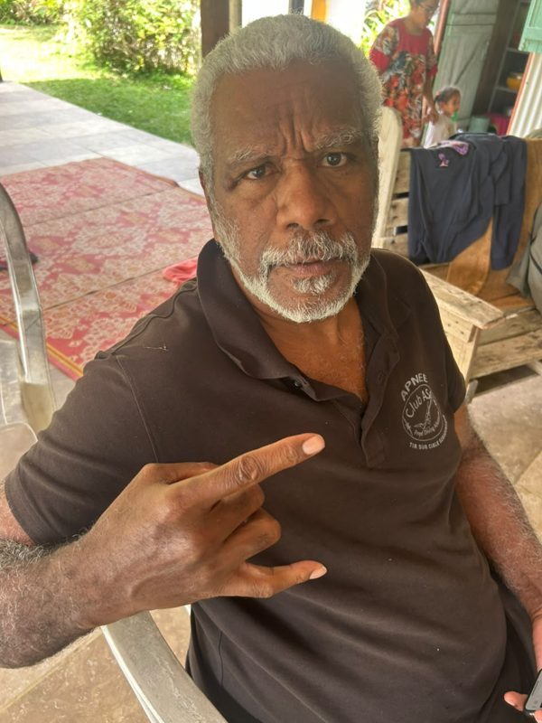
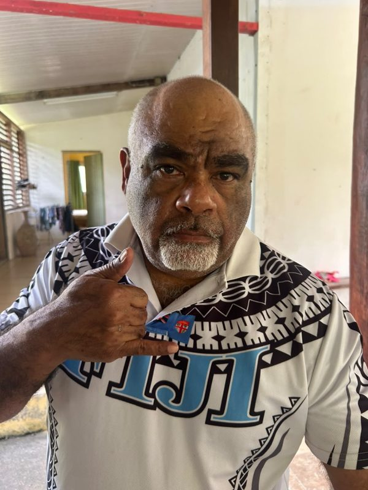

Bienvenue
Stage initial Initiateur-Entraîneur & MEF1 Apnée
📍 Lifou (Luecila) · 🗓️ 7, 8 et 9 août 2026
Cet espace centralise tout ce dont vous avez besoin pour le stage : le programme détaillé,
les supports de cours à télécharger, les informations pratiques et les photos du week-end.
Les responsables de la formation

Gilbert KAUMA
IRA
Instructeur Régional d'Apnée · Président du club ASA (Apnée & Tir sur Cible Subaquatique). Il dirige et valide la formation.

Alphonse PUJAPUJANE
MEF2
Moniteur Entraîneur Fédéral 2e degré (stagiaire, en révision) · Directeur technique Wëtresij. Il encadre les cours et les corrections.
🏠 Hébergement & coursTout se déroule sur place à Luecila, chez la famille Mole de « Pothe » : hébergement, cours théoriques (préau près de la case), repas et cuisine.
🍽️ RepasDéjeuners du samedi et du dimanche pris en charge. Les repas du soir sont cuisinés tous ensemble.
🚗 TransportPas de location de voiture : nous restons sur place. Voitures personnelles si besoin. Prévoir une carte EEC de 3 000 F.
👥 ArrivéeLes camarades de l'ASA (8 personnes) arrivent le vendredi 7 au matin — accueil prévu. Retour le lundi 10.
Important — participants Wëtresij : renouvellement des licences, certificats médicaux à jour, et prévoir 5 000 F.
Programme officiel
Les trois jours du stage
Programme du stage initial IE et MEF1 Apnée — 7, 8 et 9 août 2026, Lifou. La version PDF officielle est téléchargeable dans l'onglet Supports.
Vendredi 7 août — Préparation
14h00 – 18h00Préparation de la salle (tableau, vidéoprojecteur) et concertation des MEF1/MEF2 pour la présentation des coursWëtresij, MEF1, MEF2, IRA
Samedi 8 août — Journée 1
08h00 – 08h30Ouverture du stage et présentation de chacunIRA, cadres et stagiaires
08h30 – 09h15Prérogatives Initiateur / Moniteur et cursusPrépa MEF1 + MEF2
09h15 – 10h15Réglementation de la pratiquePrépa MEF2
10h15 – 10h30Pause
10h30 – 11h30Organisation de la sécuritéPrépa MEF2
11h30 – 12h30Pédagogie pratique : construction d'une séancePrépa MEF1 + MEF1 + MEF2
12h30 – 14h00Déjeuner
14h00 – 15h00Préparation des sujets en groupe (distribution des sujets)
15h00 – 16h30Présentation des sujets au tableau (3)20' présentation + 10' correction
16h30 – 16h45Pause
16h45 – 17h45Suite des présentations au tableau (2)20' présentation + 10' correction
17h45 – 18h15Débriefing — fin de la 1ère journée
Dimanche 9 août — Journée 2
08h00 – 08h15Rappel rapide de la journée du samediIRA
08h15 – 10h15Physiologie et accidents en apnéePrépa MEF2
10h15 – 10h30Pause
10h30 – 11h30Paramètres de la performancePrépa MEF2
11h30 – 12h30Construction d'un entraînement (cycle)Prépa MEF2
12h30 – 14h00Déjeuner
14h00 – 15h00Préparation des sujets en groupe — « Préparation d'une progression » (au programme de l'examen MEF1, pas IE)
15h00 – 16h30Présentation des sujets au tableau (3)20' présentation + 10' correction
16h30 – 16h45Pause
16h45 – 17h45Suite des présentations au tableau (2)20' présentation + 10' correction
17h45 – 18h15Débriefing — fin de la 2e journée
18h30Fin de stage, bilan et clôtureIRA